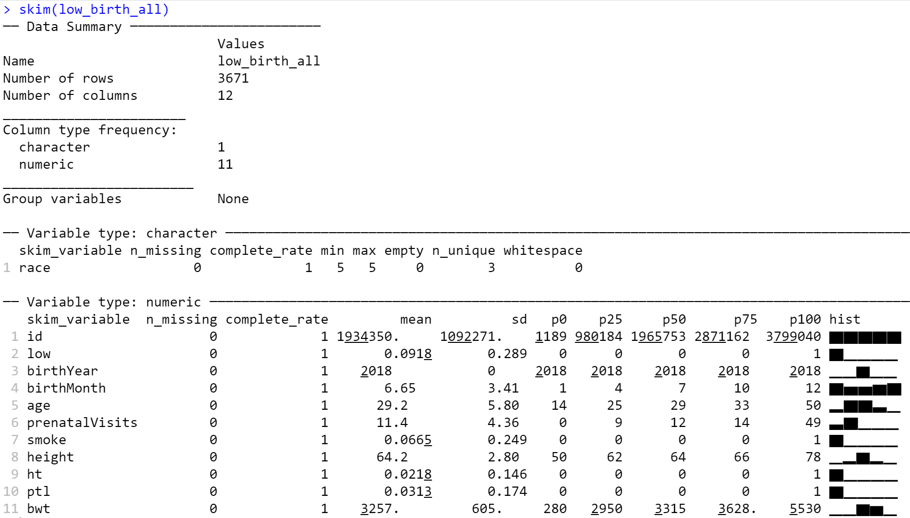
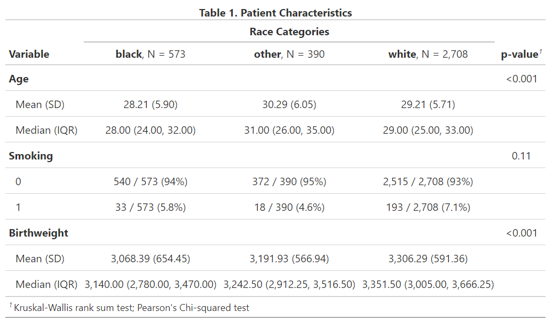
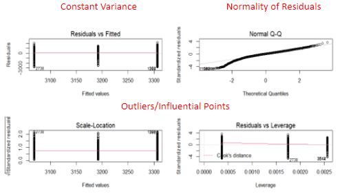

2 Descriptive Statistics & Hypothesis Testing
Descriptive Statistics
Descriptive statistics’ purpose is to help describe the basic features of the data. This is all exploratory information. Below, some common measures of describing a continuous variable are listed below:
- Measures of central tendency (e.g., mean, median)
- Describes where the “center” of the data is.
- Mean is also known as the “average”.
- Median is also known as the 50th percentile.
- Measures of variability/spread (e.g., standard deviation, interquartile range-IQR, range)
- Variance is the squared value of the standard deviation.
- Interquartile range is from the 25th percentile to the 75th percentile.
- Range is the distance from the minimum to the maximum observation.
Here is a list of all the R functions available to provide various descriptive statistics information:
mean(mydata): Mean of all numeric variablesmean(mydata$myvar): Mean of a selected numeric variable from the datasetmedian(mydata$myvar): Median: the 50th percentilevar(mydata$myvar): Variancesd(mydata$myvar): Standard Deviationmin(mydata$myvar): Minimum valuemax(mydata$myvar): Maximum valuerange(mydata$myvar): Range: Min-Maxquantile(mydata$myvar): Quartiles; Interquartile Range: 25th - 75th percentiles.
Continuous vs. Categorical Variables
In data files, to be able to determine what kind of descriptive statistics you need to use, you must first understand your data. Typically, determine whether the values in your variable (column) is continuous, or a categorical. A continuous variable is typically one that you can perform a mathematical operation on. These are spread on a continuous range. Some examples of continuous variables can be age, weight, blood pressure, length of stay, and more.If a column contains “Yes/No” values for a question, then it is categorical.
One thing to note, is that a column that contains numeric values does not automatically make it a continuous variable. Rather, if seems like the numeric values represent groups (e.g. 0 for no, and 1 for yes), it is actually a categorical variable. The next few sessions explain various ways to calculate descriptive statistics from continuous and categorical variables in R.
Continuous Variables
To get a quick summary for numeric variables, you can use the summary() function that automatically comes from the base package. This provides the following values:
- Minimum
- 1st Quartile
- Median
- Mean
- 3rd Quartile
- Maximum
Here is an example code to get the summary for age column of the low_birth_all data frame.
# Put in the variable inside the ()
summary(low_birth_all$age) Min. 1st Qu. Median Mean 3rd Qu. Max.
14.00 25.00 29.00 29.17 33.00 50.00 You can run the summary() function on the entire data frame, but it will only return meaningful values for columns that contain numeric values.
Most manuscripts report the following descriptive statistics:
- Mean and Standard Deviation
- Median and Interquartile Range
Both are commonly used but, the median and interquartile range is often better to use when you have a “skewed” dataset. This means that the data is not “normally” distributed and leaning more towards a certain value over another (left-tailed, or right-tailed). Medians are not as affected by outliers and skewness as mean values are, so they are better to use if there is any skewed data. For the variability measure to go with the median, use the interquartile range.
If the median and mean values are close to each other, then it gives you an idea that the data is relatively normally distributed, so you can use either descriptive statistic measures. If they have a large discrepancy, than there may be skewness in the data, so the median and interquartile range are preferred.
A different way to get the summary statistics of variables is to use the skim() function from the skimr package. This provides the following values:
n_missing: Number of NA values in the columncomplete_rate: The percent of rows that do not contain NA values (maximum value is 1)mean: Mean value of numeric columnsd: Standard deviation value of numeric columnp0: minimum valuep25: 25th percentile valuep50: median valuep75: 75th percentile valuep100: maximum value
skim(low_birth_all) # input the entire data set
When using this function, be cautious of reporting the summary of all columns. This function runs across the entire data frame, so it might generate summaries that are not meaningful. For example, running the skim() function with our low_birth_all data frame generates meaningless summaries for the id variable.
- The
idcolumn is an identifier column for each unique baby. - The
htandptlcolumns are bivariate (0/1) columns, indicating that they only have values of 0 and 1.- This kind of binary variables are actually “categorical” variables.
- Therefore, this kind of descriptive statistics is not helpful. Frequencies and percentage values will be more informative.
Meanwhile, if you would like to generate summary statistics for each level of another categorical variable, the dplyr package and the function group_by() can assist with this task. Here is an example of calculating summary statistics of birthweight bwt by race.
low_birth_all %>% # use the low_birth_all data
group_by(race) %>% # Group by the race
summarize(n = n(), # total number of observations
min = min(bwt), # minimum
q1 = quantile(bwt, 0.25), # 25th percentile
median = median(bwt), # median
q3 = quantile(bwt, 0.75), # 75th percentile
max = max(bwt)) %>% # maximum
as.data.frame(.) %>% # return the result as a dataframe object in R
mutate_if(is.numeric, round, 2) # round numeric columns so they have two decimal points race n min q1 median q3 max
1 black 573 280 2780.00 3140.0 3470.00 5115
2 other 390 640 2912.25 3242.5 3516.50 4672
3 white 2708 482 3005.00 3351.5 3666.25 5530If the numeric/continuous variable that you are retrieving calculations for has any NA values, the functions from above may return as NA. The NA value gets returned because these functions take the NA value into the calculation. But the NA value is not a numeric value, so the R code cannot run the calculation properly and returns NA.
One way to work around this is to add in the option of na.rm = T or na.rm = TRUE into your function (e.g. min(mydata$myvar, na.rm = T)). This na.rm option is typically defaulted to FALSE, but we are setting it to TRUE to ensure that we remove any NA values from our calculations. Feel free to check the documentation for these summary statistics functions using the ?function_name() syntax to check if you can do this for a function of interest.
Categorical Variables
For categorical variables, you can get descriptive statistics by calculating the row, column, and total frequencies and percentages (%). This is typically done through two- and three-way tabulations. Here are some examples:
tbl <- table(mydata$var1, mydata$var2) # 2-way table
prop.table(tbl, 1) # Row Proportions
prop.table(tbl, 2) # Column Proportions
prop.table(tbl) # Total Proportions
xtabs(~var1 + var2 + var3, data = mydata) # 3-way cross-tabulationTo get a 1-way tabulation, you can put a single variable inside the table() function. This will return the frequency of that variable. To return the proportion tables in R, you must input the output of the table() function like the tbl object shown above.
An alternative method to run a 3-way tabulation is to use the following functions from the janitor package.
tabyl(): A function to generate a frequency table (1-, 2-, or 3-way).show_missing_levelscondition set toTRUEif you have any missing data and its percentage.
adorn_totals(): Append a totals row and/or column to a data frame.adorn_percentages(): Convert a data frame of counts to percentages.adorn_pct_formatting(): Format a data frame of decimals as percentagesadorn_ns(): Add underlying Ns to a tabyl displaying percentagesadorn_title(): Add column name to the top of a 2-way tabyl
Example: two-way tables of smoke by race stratified by history of hypertension ht (0/1)
low_birth_all %>%
tabyl(smoke, race, ht, show_missing_levels = FALSE) %>%
# adorn_totals("col") %>%
adorn_percentages("row") %>%
adorn_pct_formatting(digits = 1) %>%
adorn_ns %>%
adorn_title$`0`
race
smoke black other white
0 15.5% (520) 10.8% (364) 73.7% (2471)
1 12.7% (30) 7.6% (18) 79.7% (188)
$`1`
race
smoke black other white
0 27.8% (20) 11.1% (8) 61.1% (44)
1 37.5% (3) 0.0% (0) 62.5% (5)How to Create ‘Table 1’ with gtsummary
In R, there is a way to combine the descriptive statistics of both continuous and categorical variables and put them inside a table. This is typically done through the gtsummary package. This table can be copy-pasted into your publication since it was created to generate a nicely formatted table for you. To read more on this package (e.g. tutorial articles are provided here), read more from the documentation website.
From this package, you can create the table using the tbl_summary() function to generate a function like the following:

With this package, you only need to specify what are the continuous and/or categorical variables and how to visualize the descriptive statistics in the table. The table will then be generated for you. Using the tbl_summary() can also display a p-value to see if there is a statistically significant difference between groups, alongside which test was used to generate the p-values. By default, gtsummary will choose the best statistical tests and use those for the p-values. If you want to specify the test, then you can specify it on your end within the code.
Click HERE to view code to generate “Table 1”:
# Make the table
tab <- low_birth_all %>%
select(age, race, smoke, bwt) %>%
tbl_summary(by = race, label = list(age ~ "Age", smoke ~ "Smoking", bwt ~ "Birthweight"),
type = all_continuous() ~ "continuous2",
statistic = list(all_continuous() ~ c("{mean} ({sd})", "{median} ({p25}, {p75})"),
all_categorical() ~ "{n} / {N} ({p}%)"),
digits = all_continuous() ~ 2,
missing_text = "(Missing)") %>%
add_p(pvalue_fun = ~style_pvalue(.x, digits = 2)) %>%
modify_header(label ~ "**Variable**") %>%
modify_spanning_header(c("stat_1", "stat_2", "stat_3") ~ "**Race Categories**") %>%
modify_caption("**Table 1. Patient Characteristics**") %>%
bold_labels()
# Export and save the file to HTML
tab %>%
gtsummary::as_gt() %>%
gt::gtsave(., "Table1_Example.html")
# The fille will save automatically to the current working directoryBasic Hypothesis Testing
Hypothesis testing provides a framework for making decisions on an objective basis rather than on a subjective basis by simply looking at the data. This is usually done when you have a have-defined question in mind. Otherwise, you are at risk of ending up with a false positive result.
The null hypothesis (\(H_{0}\)): hypothesis to be tested
vs.
The alternative hypothesis (\(H_{1}\)): hypothesis contradicting the null
Note that our decisions will always be with respect to the null hypothesis.
Note: You either reject the null or fail to reject the null hypothesis. You never “accept” the alternative hypothesis.
Student’s T-test
A T-test is an analysis of one- or two-population means:
- Used for continuous (numeric) data (outcomes)
- One-sample T-test (compare one population mean to a specified value)
- Two-sample T-test (compare two population means)
- Independent or paired test
- Independent samples are not correlated (e.g. treatment and control, male and female).
- Paired samples means that there is some correlation between two groups (e.g. pre- and post- on the same group at a certain specific time point)
- Independent or paired test
Always remember to check model assumptions before inferences:
- Normality (for small samples)
- Can be assessed by histograms (check for bell-shaped curve) or QQplots/Normality tests (not covered here)
- You can also try data transformation (logarithmic, and etc.) to check for normality.
- You must test for normality on both groups for two-samples.
- Can be assessed by histograms (check for bell-shaped curve) or QQplots/Normality tests (not covered here)
- Independent observations within the group(s) (not repeated)
One-Sample T-test
Hypothesis to be tested (two-sided):
\(H_{0}: \mu = \mu_{0}\) vs \(H_{1}: \mu \ne \mu_{0}\)
- The \(\mu_{0}\) is the value that you want to test.
- The \(\mu\) is the actual average value of the variable of interest.
Example: Is the mother’s average age different from 26?
t.test(low_birth_all$age, mu = 26) # mu 0 = 26
One Sample t-test
data: low_birth_all$age
t = 33.159, df = 3670, p-value < 2.2e-16
alternative hypothesis: true mean is not equal to 26
95 percent confidence interval:
28.98537 29.36059
sample estimates:
mean of x
29.17298 Other options that you can change from the default settings of t.test() function are the following:
- Default
alternative = 'two-sided'; - Can be changed to
alternative = "less"oralternative = "greater" - Default
alpha = 0.05
To interpret the p-value, you use the “Type-I Error”. If the p-value is less than the default alpha (0.05), then you reject the null hypothesis. And you have enough evidence to conclude that the mean is actually different from 26. R specifies the alternative hypothesis to be tested as part of the output for you and provides the 95% confidence interval for you. From these values, you can write an interpretation like the following:
In the code output, the t.test() function returned a 95% confidence interval of (28.99, 29.36). This can be written in the following manner:
We are 95% confident that in this population the true mean mother’s age is between approximately 28.99 and 29.36 years.
- The 95% confidence interval provides the range of where the true mean can fall.
The interpretation of the entire output can be written as:
At 0.05 significance level, we reject the null hypothesis (p-value < 0.001) and conclude that the tree mean mother’s age is not equal to 26.
Two-Sample T-test
Hypothesis to be tested (two-sided):
\(H_{0}: \mu_{1} = \mu_{2}\) vs \(H_{1}: \mu_{1} \ne \mu_{2}\)
Here, you are comparing the means of two different samples. In the two-sample case, you also need to test for the equality of variances:
- Testing the equality of variances implies testing the hypotheses:
\(H_{0}: \sigma^{2}_{1} = \sigma^{2}_{2}\) vs \(H_{1}: \sigma^{2}_{1} \ne \sigma^{2}_{2}\)
0.05, you can interpret the result from the variance test as below:
From the output above, you should see that the p-value returned as 0.11. This value indicates that there is not enough evidence to declare inequality of variances.
- Then let’s test for equality of means:
t.test(bwt_smoke$bwt, bwt_nonsmoke$bwt, var.equal = T, paired = F)
Two Sample t-test
data: bwt_smoke$bwt and bwt_nonsmoke$bwt
t = -5.7962, df = 3669, p-value = 7.355e-09
alternative hypothesis: true difference in means is not equal to 0
95 percent confidence interval:
-309.8009 -153.1908
sample estimates:
mean of x mean of y
3040.893 3272.389 Other options that you can change from the default settings of t.test() function are the following:
- Default
var.equal = FALSE; this can be changed toTRUEif variances are equal - Default
paired = FALSE; this can be changed toTRUEif the two samples are not independent of each other.
The interpretation of the entire output can be written as:
At 0.05 significance level, we reject the null hypothesis (p-value < 0.001) and conclude that the true birthweight means for smokers and non-smokers are significantly different.
Analysis of Variance (ANOVA)
The ANOVA is used to compare (continuous) outcomes of 3 or more groups. To use this test, the following model assumptions must be followed:
- Independent samples
- Responses within the groups are independent and identically distributed (i.i.d)
- Residuals are normally distributed
- Equality of variances across groups
Example: Is mean birthweight of babies significantly different by race?
- The anova can be run in R using the
anova()function. - Better to declare the categorical variable/predictor as a factor, otherwise, it will be considered a continuous measurement.
# lm : Linear Models
# Continuous variable (dependent variable) will be on the left hand side of the ~
# Independent variables on the right hand side of the ~
res <- lm(bwt~factor(race), data = low_birth_all)
anova(res)Analysis of Variance Table
Response: bwt
Df Sum Sq Mean Sq F value Pr(>F)
factor(race) 2 28613986 14306993 39.856 < 2.2e-16 ***
Residuals 3668 1316696669 358969
---
Signif. codes: 0 '***' 0.001 '**' 0.01 '*' 0.05 '.' 0.1 ' ' 1The interpretation of the entire output can be written as:
At 0.05 significance level, we reject the null hypothesis (p-value < 0.001) and conclude that there is a significant difference in mean birthweight by race.
But this can raise the question of, “where are these differences coming from?” The following code takes a look at his in more detail:
# ANOVA table
summary(res)
Call:
lm(formula = bwt ~ factor(race), data = low_birth_all)
Residuals:
Min 1Q Median 3Q Max
-2824.29 -301.29 49.61 363.71 2223.71
Coefficients:
Estimate Std. Error t value Pr(>|t|)
(Intercept) 3068.39 25.03 122.591 <2e-16 ***
factor(race)other 123.54 39.33 3.141 0.0017 **
factor(race)white 237.90 27.55 8.635 <2e-16 ***
---
Signif. codes: 0 '***' 0.001 '**' 0.01 '*' 0.05 '.' 0.1 ' ' 1
Residual standard error: 599.1 on 3668 degrees of freedom
Multiple R-squared: 0.02127, Adjusted R-squared: 0.02074
F-statistic: 39.86 on 2 and 3668 DF, p-value: < 2.2e-16Here you might notice that you do not see the result for the “black” in race variable. This is because it is used as the “reference” category. The values you see are comparisons between other vs. black, and white vs. black. Here, the intercept is the “mean” birthweight of the reference category.
From this output, the interpretation can be written as:
At 0.05 significance level, we conclude that there are significant differences in mean birthweight between White vs. Black race and Other vs. Black race.
To change the reference category, you can do so using relevel() function.
One thing to note about ANOVA, is that you cannot use it without first checking a few model assumptions: constant variance and normality of residuals.
To check if the model assumptions are followed, you can use the following code:
par(mfrow = c(2, 2))
plot(res)
- In constant variance, you want your residuals vs. fitted values to be scattered (homogeneously distributed)
- No pattern should be detected
- If you do see a pattern, then consider changing to a non-parametric test or perform data transformation.
- For normality of residuals, you want to see a relatively straight line.
- It might not be a perfectly straight line (especially departures in the tails).
- If there is a bump(s) within the middle of the plot, this is indicating that the residuals are not normally distributed, so ANOVA might not be the best test to conduct.
Categorical Data Analysis
Categorical outcome (Y) with 2 levels (binary) or \(\ge3\) levels (nominal or ordinal)
Here are some examples:
- Nominal: race/ethnicity
- Ordinal: clothing sizes (S, M, L, XL)
- Binary: Disease/No Disease; Republican/Democrat
Predictor variables (X) can take on any form: binary, categorical, and/or continuous.
Chi-Square Test of Independence
Use two categorical variables (row and column) to test whether they are independent or associated. The hypothesis is as follows:
The null hypothesis (\(H_{0}\)): variables A and B are independent
vs.
The alternative hypothesis (\(H_{1}\)): variables A and B are not independent
The test statistics for the Chi-square test is represented as:
\[X^{2} = \sum\frac{(Observed - Expected)^{2}}{Expected}\]
To run the Chi-Square test of independence, follow these steps:
- Create the (r X c) table
- r represents the number of levels for the row variable
- c represents the number of levels for the column variable
- Most common example is a 2 x 2 table
- Use the observed and expected counts in each cell to calculate the chi-squared statistics
If there are low expected cell counts (<5), use Fisher’s Exact test instead.
In R, we can recreate the steps listed above by doing the following:
- Start by tabulating the two categorical variables
- Then apply the function
chisq.test()
Example: Is there an association between smoking and having a low birthweight baby?
chisq.test(low_birth_all$smoke, low_birth_all$low)
Pearson's Chi-squared test with Yates' continuity correction
data: low_birth_all$smoke and low_birth_all$low
X-squared = 10.47, df = 1, p-value = 0.001214From this output, the interpretation can be written as:
At 0.05 significance level, we reject the null hypothesis (p-value = 0.001) and conclude that there is a significant association between smoking and having a low birthweight baby.
Note: Remember that association does not mean causality!
Fisher’s Exact Test
This test is used instead of the Chi-Squared Test when there are low expected cell counts (<5).
Example: Is there an association between smoking and having a low birthweight baby?
fisher.test(low_birth_all$smoke, low_birth_all$low)
Fisher's Exact Test for Count Data
data: low_birth_all$smoke and low_birth_all$low
p-value = 0.001768
alternative hypothesis: true odds ratio is not equal to 1
95 percent confidence interval:
1.250723 2.713328
sample estimates:
odds ratio
1.862796 From this output, the interpretation can be written as:
At 0.05 significance level, we reject the null hypothesis (p-value = 0.002) and conclude that there is a significant association between smoking and having a low birthweight baby.
When compared to the Chi-Squared test result, the p-values are similar. If you are ever in doubt about the count/frequency of your data, use the Fisher’s Exact Test.
Multiple Comparisons
For multiple comparisons, you might want to consider Tukey adjustment or Bonferroni adjustment to help with potential inflation of the type-I error.
If you want to use all-pairwise comparisons, you can use Tukey adjustment to adjust the Type-I error because multiple comparisons typically inflate that value.
res <- lm(bwt ~ factor(race), data = low_birth_all)
ANOVA <- aov(res)
TUKEY <- TukeyHSD(ANOVA)
TUKEY Tukey multiple comparisons of means
95% family-wise confidence level
Fit: aov(formula = res)
$`factor(race)`
diff lwr upr p adj
other-black 123.5400 31.32304 215.7569 0.0048295
white-black 237.8994 173.30296 302.4958 0.0000000
white-other 114.3594 38.27583 190.4430 0.0012499The output displays the confidence intervals with the adjustments of the multiple comparisons. The p-values are also adjusted based on the Tukey adjustment for the type-I error.
If you want to use the Bonferroni adjustment (which is more conservative than the Tukey adjustment).
pairwise.t.test(low_birth_all$bwt, low_birth_all$race, p.adjust.method = "bonf")
Pairwise comparisons using t tests with pooled SD
data: low_birth_all$bwt and low_birth_all$race
black other
other 0.0051 -
white <2e-16 0.0013
P value adjustment method: bonferroni The output displays the p-values for each comparisons by race, and indicates that all of these are statistically significant.
One suggestion when running ANOVA, is that if the overall ANOVA result returns as statistically significant, then you should move to pairwise comparisons. If the overall ANOVA is not statistically different, then there is no need to run pairwise comparisons, because you will not find anything.